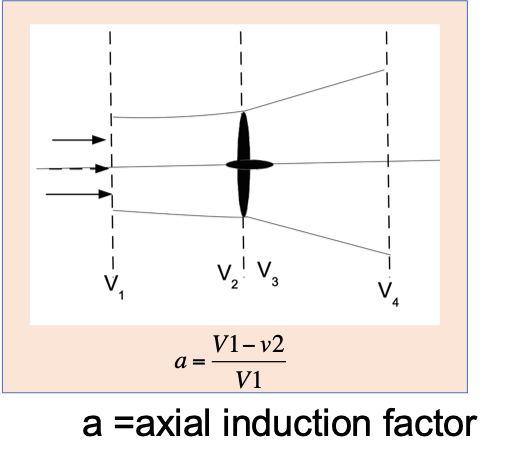
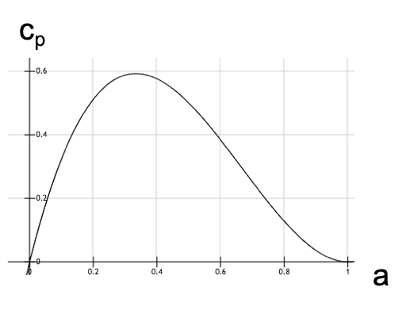
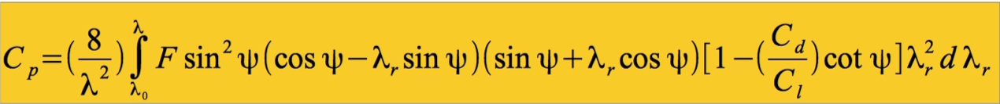
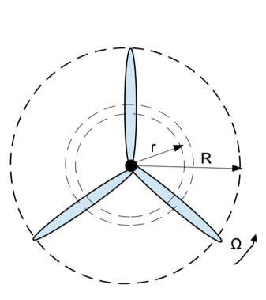
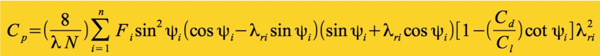
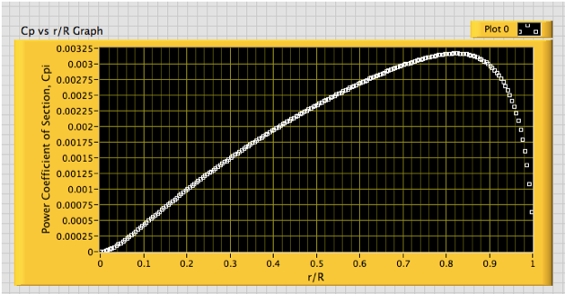
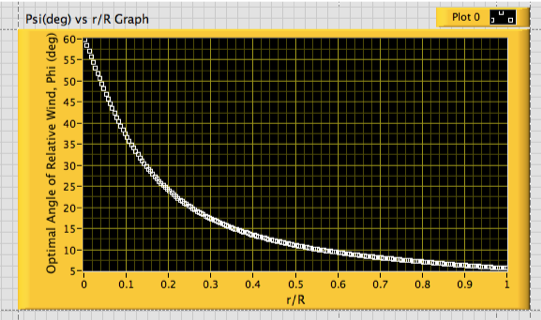
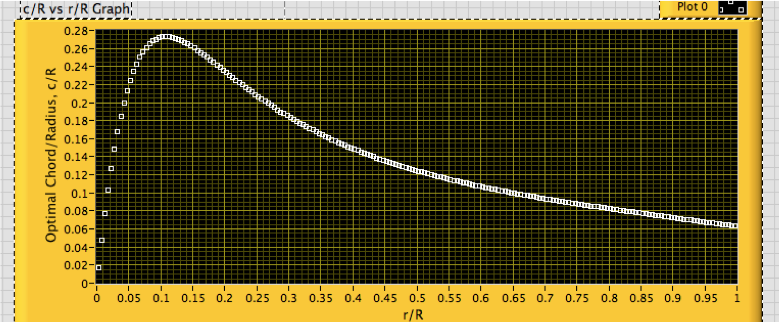

Motivation:
- Wind energy is a useful alternative energy source
- Most commercially available wind turbines have low power coefficients
- Wind conditions are different at different locations. Customized designs are
necessary for each location.
Theory:
Under the ideal conditions, it can be shown that the maximum Power Coefficient (Cp) of a
wind turbine is 0.5926. This value is knwon as the Betz limit. Because of the Betz limit,
the maximum energy extracted from the wind is limited to 59.3%. The power coefficient (Cp)
reaches the Betz limit when the Axial Indiuction Factor (a) is 0.33.
\[ C_p = \frac{\text{power extracted}} {\text{power in the wind}} = 4a(1-a)^2 \]
For practical wind turbines the following factors need to be considered.
- Wake Rotation
- Finite # of blades
- Drag force
- Tip losses


Blade Element- Momentum Theory:

\[ \lambda - \text{tip speed ratio}\]
\[ \lambda_r - \text{local tip speed ratio}\]
\[ \Psi - \text{local tip speed ratio}\]
\[ C_d - \text{drag coefficient}\]
\[ C_l - \text{lift coefficient}\]
\[ F - \text{tip loss factor}\]

Method:
- Divided the blade into n sections of equal width
- the parametes used are angle of attack (α) =5.50,
Cd= 0.02338, Cl= 0.6206 and Renolds number (R) = 50,000
- Repeated for each section
- A three blade tubine was choosen since it is the most common type with the
tip speed ratio 7.
- The airfoil shape used was NACA 0012
- Monte Carlo simulation mehtod was used to generate large number of Ψis and calculated the
Cpi for each Ψi
- Summed over all sections

Results and Observations:
The contribution to the power coefficinet from the elements near the hub and the tip are
very low. Most of the enegy is exptracted from the region where r/R is between 0.7 - 0.9.

The angle of attack decreases woth the distance from the center for the optimum perrformance.
To achieve this, the blade needs to be twisted.

Also the 'cord' or the thickness of the blade varies with the distance. Close to the hub the
optimin blade is wider and narrows down with the distance.

The results were presented Annual meeting at Georgia Academy of Science annual meeting,
University of North Georgia, April 2019.
Used: LabView, Monte Carlo Simulations, Blade-Element Theory
Github: https://github.com/lumindak/Optimum-wind-turbine
Abstract: https://digitalcommons.gaacademy.org/gjs/vol77/iss1/115/